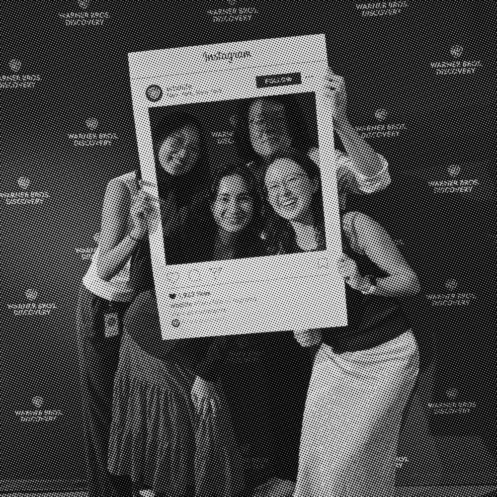
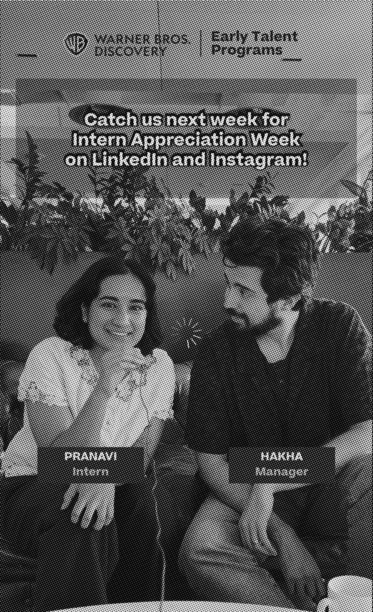

I'm almost done with my summer internship and it's been an unforgettable experience. A huge thank you to Hakha Mashayekhi and my team for making work feel like a playground, where I get to tinker with code and AI all day.
Tune into Warner Bros. Discovery next week for Intern Appreciation Week to see me and my manager's interview (and find out what HBO Max character I think he's most like)!
Nicole Liston, Warner Bros. Discovery thank you for having me!


From changing the way I stream to the way I design!
From changing the way I stream to the way I design! This summer, I joined Warner Bros. Discovery as a Product Design intern for the HBO Max team, and it has been nothing short of a transformative experience. I had the opportunity to work alongside talented designers and researchers on the 1st generation AI-native feature for content discovery on the HBO Max app.
Through this internship, I gained a deeper appreciation for strategy-based design, thinking not only about visuals and interactions, but also about how design decisions align with user needs and long-term product vision.
A heartfelt thank you to my amazing and thoughtful manager, Hakha Mashayekhi, my recruiter, Shelly Punter, who saw my potential and championed my growth, and all the wonderful friends I made along the way. This has truly been a one-of-a-kind experience!
This is a huge milestone in my career, and I'm grateful for all the experiences that led me here. A big thank you to my recruiter Shelly Punter and my manager Hakha Mashayekhi for believing in me and seeing my potential. Also shout out to my incredible friends and family for supporting me through this process!
I can't wait for this summer and to see where this exciting, new opportunity takes me!
This is a huge milestone in my career, and I'm grateful for all the experiences that led me here. A big thank you to my recruiter Shelly Punter and my manager Hakha Mashayekhi for believing in me and seeing my potential. Also shout out to my incredible friends and family for supporting me through this process!
From changing the way I stream to the way I design! This summer, I joined Warner Bros. Discovery as a Product Design intern for the HBO Max team, and it has been nothing short of a transformative experience. I had the opportunity to work alongside talented designers and researchers on the 1st generation AI-native feature for content discovery on the HBO Max app.